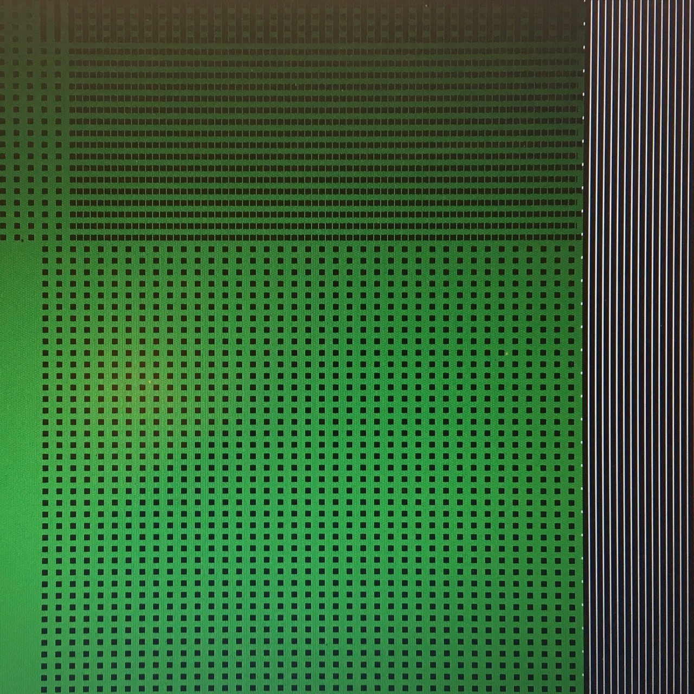
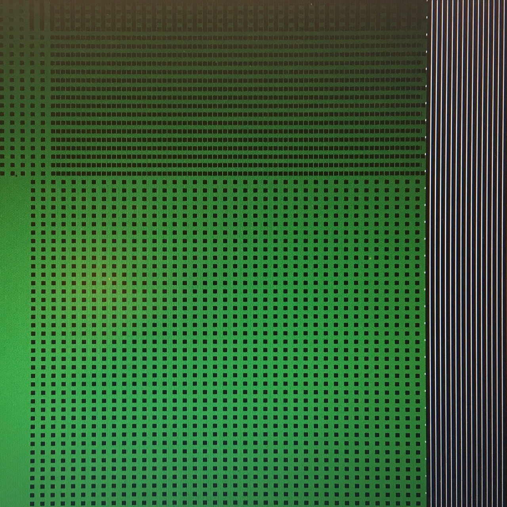
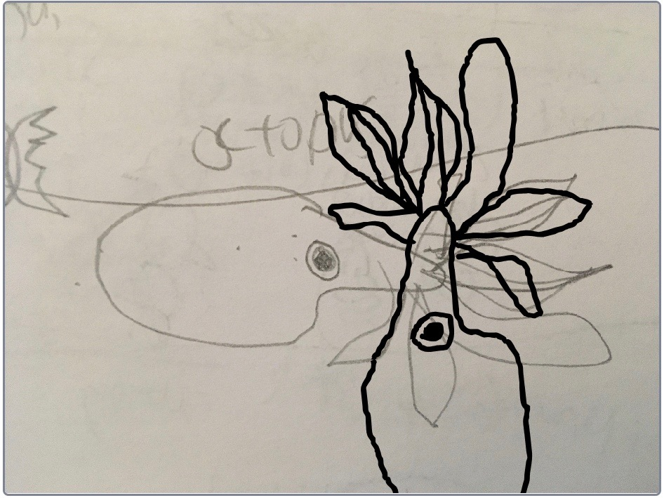
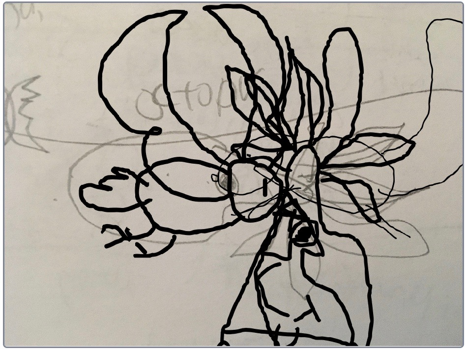

Cridhe Crois-Shlighe :: Digital Skills
School Work
Below is a small sample of the work created in schools as part of the digital skills program running in North Uist, Benbecula and South Uist 2019 - 2020. Pupils learned a range of digital skills starting with the Scratch graphic programming language and in some cases going on to learn the Python programming language. Pupils at Sgoil Lionacleit, Sgoil Uibhist a Tuath and Sgoil-an-Iochdair worked on websites using HTML and CSS.
Learning Resources
Links to some of the online learning resources used and created during the project
Scratch Projects
A sample of programs made by young learners during the project
Game Jam 2019
Pupils from Sgoil an Iochdair took part in a national game jame in summer 2019. They were set the challenge of creating a game around the theme of 'space' within a day. Code was uploaded to a central server. Most participants were in Glasgow so we kept in touch with organisers via online.
Exploring Geometry with Nested Functions at Sgoil Bhaile a’Mhanaich
Weaving Tweed with Python at Lionacleit Library Fun Palace
 

Designing Game Objects
Animal Simulator 3D
Experimental Music Workshop at Sgoil Dhalabroig
Inspired by aleatoric compositions by John Cage (Williams Mix) and David Tudor (Rainforest) we used Scratch to build tiny synthesisers with three functions: short sound, looped sound and chaotic sound.